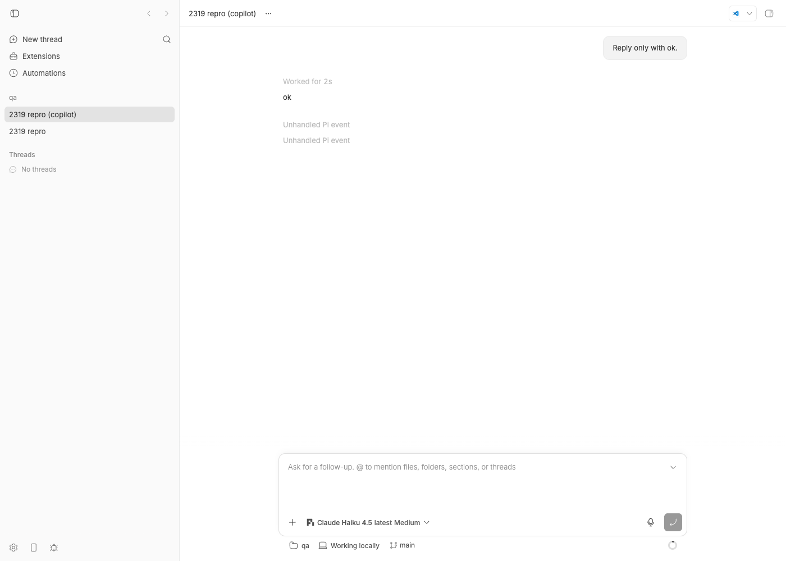
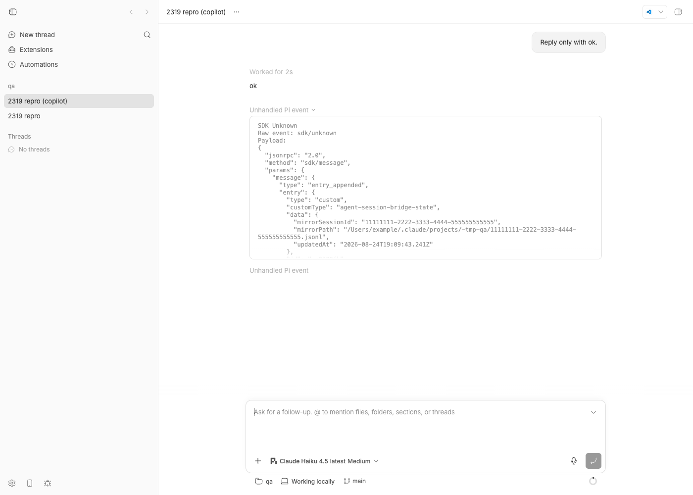

#2319 · provider-claude-code: unknown custom entry type agent-session-bridge-state floods sdk/unknown log
Verdict: REPRODUCED — but in provider-pi, not provider-claude-code · Root-cause confidence: high
1. TL;DR
The reporter sees a stream of "Unhandled … event / SDK Unknown / Raw event: sdk/unknown" rows whose payload is a { type: "custom", customType: "agent-session-bridge-state", … } entry written by the agent-session-bridge extension. The issue blames plugins/provider-claude-code/src/visibility.ts. That attribution is wrong: agent-session-bridge-state is written by the bridge's Pi extension via pi.appendEntry(...), the Claude Agent SDK has no type: "custom" message at all, and the Claude parser would label such a payload sdk/custom, never sdk/unknown.
The real mechanism: since Pi 0.84 every pi.appendEntry(customType, data) call makes Pi emit an entry_appended session event on its RPC stream, with the custom entry nested as entry. bb's Pi bridge forwards every RPC event verbatim as an sdk/message, and plugins/provider-pi/src/visibility.ts has no case for entry_appended, so toPiSdkEventType() returns "unknown", the event is classified { kind: "sdk/unknown", coverage: "unknown" }, and the translator persists a provider/unhandled thread event for each one. The bridge extension persists its state on every message_end and turn_end, so a one-line prompt produces three such rows. Reproduced end to end on a live bb instance with a real Pi turn (3 provider/unhandled rows per turn) and with a unit test at the exact code path. Harmless for correctness, but it pollutes the event log, the timeline (always in dev builds; behind "Show unhandled provider events" in release builds) and every plugin subscribed to thread events.
2. Claims vs findings
| Claim from the issue | Status | Evidence |
|---|---|---|
visibility.ts in provider-claude-code parses every sdk/message; an unrecognized type falls through to { kind: "sdk/unknown" } | Refuted (wrong provider) | Claude Code's default branch returns { kind: "sdk/unknown", sdkType: type } and describeParsedClaudeRawEvent turns that into kind: "sdk/custom" (L400-405, L437-441). Cross-check test issue-2319.crosscheck.test.ts passes: the quoted payload yields { kind: "sdk/custom", coverage: "unknown" }. The literal text "SDK Unknown / Raw event: sdk/unknown" can only come from the Pi parser, whose unknown branch carries no type (pi visibility L271-272, L298-299). |
| Symptom: high-frequency "SDK Unknown / Raw event: sdk/unknown" noise, harmless | Verified (Pi provider) | Live Pi thread thr_w3xqexe3gn: the prompt "Reply only with ok." produced 3 provider/unhandled events with rawType: "sdk/unknown" (event sequence, screenshot). The turn itself completed normally ("ok"). |
The payload is params.message = { type: "custom", customType: "agent-session-bridge-state", … } | Partially verified (shape differs) | Pi 0.84.x does not send the custom entry as the message itself; it sends { type: "entry_appended", entry: { type: "custom", customType: "agent-session-bridge-state", data: {…}, id, parentId, timestamp } } (raw pi RPC stdout, dist/core/agent-session.js:1954-1959 of pi-coding-agent 0.84.3). The issue most likely abbreviated the nesting; either shape ends in sdk/unknown today. |
agent-session-bridge-state is emitted by the session-bridge extension running inside Claude Code threads; it mirrors sessions to local JSONL (mirrorPath) | Refuted (it is a Pi extension) | packages/pi/index.ts of agent-session-bridge: const CUSTOM_TYPE = "agent-session-bridge-state", pi.appendEntry(CUSTOM_TYPE, serializePiBridgeState(state)) on message_end and turn_end (copy: agent-session-bridge-pi-index.ts). The bridge's Claude Code package is a hook CLI that writes files; it injects no SDK messages (hook-cli.ts). mirrorPath is the Claude JSONL the Pi session is mirrored to, which explains the confusion. |
| It fires frequently on thread/agent state changes | Verified | Once per message_end (user and assistant) plus once per turn_end: 3 entries for a single-turn prompt, more with tool calls. |
Handle it like command_lifecycle / assistant in the Claude parser | Refuted (wrong file) | Adding a case to the Claude parser changes nothing for this event. The fix belongs in plugins/provider-pi/src/visibility.ts (see §6; verified with a 4-line patch). |
| "logged heavily" | Unverified as bb log output | bb's server and host-daemon logs contain zero "unhandled" lines for the repro threads. The noise is persisted provider/unhandled thread events, rendered as timeline rows (dev builds always, release builds behind Settings → "Show unhandled provider events", data.ts L333-335), by bb thread log, and delivered to plugins subscribed to thread events — presumably the reporter's own plugin log. |
No changes needed in bb-plugin-prompt-suggester | Verified | Root cause is entirely in the provider parser; the plugin (server.ts) neither produces nor special-cases these events. |
{kind=link}
3. Environment
- bb
494f66526913557ab076e048218236f0a6610927(main, 2026-08-24); origin/main is 6 commits ahead, none touchingplugins/provider-piorplugins/provider-claude-code→ not fixed upstream. - macOS 26.5.2 (Apple Silicon), Node v22.23.1, pnpm.
- Pi:
@earendil-works/pi-coding-agent0.84.3 installed globally (bb's vendored SDK dep: 0.84.0, whoseAgentSessionEventunion already declaresentry_appended). Claude Code 2.1.241;@anthropic-ai/claude-agent-sdk0.3.197 (itsSDKMessageunion has nocustommember; the onlycustomTypestring in theclaudebinary is inside bundled mermaid gitgraph code). - Isolated dev instance: App
http://localhost:11828, Serverhttp://localhost:19828, Host daemonhttp://127.0.0.1:27828, data dir~/.bb-dev/bb-machines-HOST.getbb.app-checkouts-bb-.claude-worktrees-wf_846839f8-f8a-65-c276f8bc869d(deleted at cleanup). Started withBB_PI_BRIDGE_COMMAND=pi BB_PI_BRIDGE_ARGS='["--extension","/tmp/bb-2319-ext/bridge-state.ts"]'so bb's Pi sessions load the stand-in extension (bb's RPC child otherwise refuses untrusted project extensions in headless mode). - Pi models:
anthropic/claude-haiku-4-5(this machine's Pi Anthropic OAuth refresh token is expired, so that turn errored but still emitted the entries) andgithub-copilot/claude-haiku-4.5(successful turn).
4. Minimal reproduction
4a. Unit level (fastest, no accounts)
- Save
issue-2319.repro.test.tsasplugins/provider-pi/src/issue-2319.repro.test.tsand run it fromplugins/provider-pi:pnpm exec vitest run src/issue-2319.repro.test.ts expected (desired behaviour): the two "wanted:" cases pass, the two "(the bug)" cases fail actual on 494f66526: Test Files 1 passed (1) Tests 2 passed | 2 expected fail (4)The two "(the bug)" cases pass, i.e.describeRawEventreturns{ kind: "sdk/unknown", coverage: "unknown" }and the translator+assembler emit exactly oneprovider/unhandled(rawType: "sdk/unknown") perentry_appended, both mid-turn and idle. The twoit.failscases encode the desired behaviour and fail because the bug exists (log).
/**
* Repro for get-bb/bb#2319.
*
* A Pi extension that calls `pi.appendEntry("agent-session-bridge-state", …)`
* (bohdanpodvirnyi/agent-session-bridge, packages/pi/index.ts) makes Pi emit
* an `entry_appended` AgentSessionEvent whose `entry` is the custom session
* entry `{ type: "custom", customType, data }`. bb's Pi bridge forwards every
* RPC event verbatim as an `sdk/message` envelope; `parsePiRawEvent` has no
* case for `entry_appended`, so the envelope is classified
* `{ kind: "sdk/unknown", coverage: "unknown" }` and becomes a persisted
* `provider/unhandled` event (the "SDK Unknown / Raw event: sdk/unknown" row).
*
* The two `it.fails` cases document the desired behaviour (the entry is
* inert noise); they fail on 494f66526 because the bug exists.
*/
import { describe, expect, it } from "vitest";
import { createDeltaAssembler } from "@bb/provider-bridge-protocol/assembler";
import { createPiDeltaTranslator } from "./delta-translation.js";
import { piVisibilityMetadata } from "./visibility.js";
const BRIDGE_STATE_ENTRY = {
type: "custom",
id: "entry-7",
parentId: "entry-6",
timestamp: "2026-08-24T19:05:11.123Z",
customType: "agent-session-bridge-state",
data: {
mirrorSessionId: "11111111-2222-3333-4444-555555555555",
mirrorPath:
"/Users/example/.claude/projects/-tmp-qa/11111111-2222-3333-4444-555555555555.jsonl",
updatedAt: "2026-08-24T19:05:11.123Z",
},
};
/** Exactly what `pi --mode rpc` prints after `pi.appendEntry(...)`. */
const ENTRY_APPENDED_ENVELOPE = {
jsonrpc: "2.0" as const,
method: "sdk/message",
params: {
threadId: "pi-thread-1",
message: { type: "entry_appended", entry: BRIDGE_STATE_ENTRY },
},
};
/** The shape quoted in the issue body (the entry itself as the message). */
const ISSUE_QUOTED_ENVELOPE = {
jsonrpc: "2.0" as const,
method: "sdk/message",
params: { threadId: "pi-thread-1", message: BRIDGE_STATE_ENTRY },
};
describe("#2319 pi custom session entries", () => {
it("classifies entry_appended as sdk/unknown with unknown coverage (the bug)", () => {
expect(piVisibilityMetadata.describeRawEvent(ENTRY_APPENDED_ENVELOPE)).toEqual({
kind: "sdk/unknown",
coverage: "unknown",
});
expect(piVisibilityMetadata.describeRawEvent(ISSUE_QUOTED_ENVELOPE)).toEqual({
kind: "sdk/unknown",
coverage: "unknown",
});
});
it("persists one provider/unhandled row per appendEntry, mid-turn and idle (the bug)", () => {
const translator = createPiDeltaTranslator({
resolveModelContextWindow: () => null,
});
const assembler = createDeltaAssembler({
providerId: "pi",
entropyPrefix: "pi-2319",
textDeltaFlushMs: 0,
});
const assemble = (event: unknown) =>
assembler.assemble({
threadId: "bb-thread-1",
deltas: translator.translate(event, { threadId: "bb-thread-1" }),
});
// Idle thread (no open turn): the extension persists state on turn_end
// after the turn settled.
const idle = assemble(ENTRY_APPENDED_ENVELOPE);
expect(idle.map((event) => event.type)).toEqual(["provider/unhandled"]);
expect(idle[0]).toMatchObject({
type: "provider/unhandled",
providerId: "pi",
rawType: "sdk/unknown",
rawEvent: ENTRY_APPENDED_ENVELOPE,
});
// Mid-turn: message_end fires inside the run, so the row is turn-scoped.
assemble({
jsonrpc: "2.0",
method: "sdk/message",
params: { threadId: "pi-thread-1", message: { type: "agent_start" } },
});
const midTurn = assemble(ENTRY_APPENDED_ENVELOPE);
expect(midTurn.map((event) => event.type)).toEqual(["provider/unhandled"]);
expect(midTurn[0]).toMatchObject({ rawType: "sdk/unknown" });
});
it.fails("wanted: entry_appended is classified as noise", () => {
expect(piVisibilityMetadata.describeRawEvent(ENTRY_APPENDED_ENVELOPE).coverage).toBe(
"noise",
);
});
it.fails("wanted: entry_appended translates to no thread events", () => {
const translator = createPiDeltaTranslator({
resolveModelContextWindow: () => null,
});
expect(
translator.translate(ENTRY_APPENDED_ENVELOPE, { threadId: "bb-thread-1" }),
).toEqual([]);
});
});
4b. What Pi actually sends (no bb involved)
- Save the 15-line stand-in extension
bridge-state.ts(samepi.appendEntry("agent-session-bridge-state", …)calls onmessage_end/turn_endas the real extension) to/tmp/bb-2319-ext/bridge-state.ts. - Run
run-pi-rpc.sh: it pipes onepromptcommand intopi --mode rpc --no-session --extension /tmp/bb-2319-ext/bridge-state.ts --model anthropic/claude-haiku-4-5and captures stdout.bash /tmp/bb-2319-ext/run-pi-rpc.sh pi exit=0 13 /tmp/bb-reports/issues/2319/repro/pi-rpc-stdout.jsonl 3 "type":"entry_appended" 3 "type":"custom" 2 "type":"message_start" 2 "type":"message_end" 1 "type":"turn_start" 1 "type":"turn_end" 1 "type":"agent_start" 1 "type":"agent_settled" 1 "type":"agent_end" --- entry_appended lines: 5:{"type":"entry_appended","entry":{"type":"custom","customType":"agent-session-bridge-state","data":{"mirrorSessionId":"11111111-2222-3333-4444-555555555555","mirrorPath":"/Users/example/.claude/projects/-tmp-qa/11111111-2222-3333-4444-555555555555.jsonl","updatedAt":"2026-08-24T19:05:00.144Z"},"id":"dd6b3a53","parentId":"280d04b1","timestamp":"2026-08-24T19:05:00.144Z"}} 8:{"type":"entry_appended","entry":{"type":"custom","customType":"agent-session-bridge-state", … 10:{"type":"entry_appended","entry":{"type":"custom","customType":"agent-session-bridge-state", …Full capture:pi-rpc-stdout.jsonl. (This run hit the expired Anthropic OAuth token, so the assistant message is an error — the threeentry_appendedevents are emitted regardless.)
4c. End to end in bb (live instance, real Pi turn)
- Start your own dev instance with the stand-in extension injected into bb's Pi child (the bridge reads these two variables from its own environment, rpc-child.ts L94-113):
export BB_PI_BRIDGE_COMMAND=pi export BB_PI_BRIDGE_ARGS='["--extension","/tmp/bb-2319-ext/bridge-state.ts"]' scripts/bb-dev-app current # prints App/Server/Host daemon URLs eval "$(scripts/bb-dev-app env)"
- Create a scratch repo and project, then spawn a Pi thread with a one-word prompt:
mkdir -p /tmp/bb-2319-qa && cd /tmp/bb-2319-qa && git init -q && echo "# qa" > README.md && git add . && git commit -qm init curl -s -X POST $BB_SERVER_URL/api/v1/projects -H 'content-type: application/json' \ -d '{"name":"qa","source":{"type":"local_path","path":"/tmp/bb-2319-qa","hostId":"host_jtb266n7z8"}}' pnpm bb:dev thread spawn --json --project proj_isxu4c4j25 --environment /tmp/bb-2319-qa --machine host_jtb266n7z8 \ --provider pi --model github-copilot/claude-haiku-4.5 --title "2319 repro (copilot)" --prompt "Reply only with ok." pnpm bb:dev thread wait thr_w3xqexe3gn --status idle pnpm bb:dev thread log thr_w3xqexe3gn --format minimal - Expected: User → "ok", nothing else. Actual (
full output):── User ──────────────────────────────────────────────────── Reply only with ok. ── Worked for (2s) ───────────────────────────────────────── ── Assistant ─────────────────────────────────────────────── ok ── Unhandled Pi event ────────────────────────────────────── SDK Unknown Raw event: sdk/unknown Payload: { "jsonrpc": "2.0", "method": "sdk/message", "params": { "message": { "type": "entry_appended", "entry": { "type": "custom", "customType": "agent-session-bridge-state", "data": { "mirrorSessionId": "11111111-2222-3333-4444-555555555555", "mirrorPath": "/Users/example/.claude/projects/-tmp-qa/11111111-2222-3333-4444-555555555555.jsonl", "updatedAt": "2026-08-24T19:09:43.241Z" }, "id": "ce9379fb", "parentId": "a1f798e3", "timestamp": "2026-08-24T19:09:43.241Z" } }, "threadId": "thr_w3xqexe3gn" } } ── Unhandled Pi event ────────────────────────────────────── … (two more identical rows)Raw events (bb thread log --json --all,json,seq summary): three persistedprovider/unhandledevents withdata.providerId: "pi",data.rawType: "sdk/unknown", all turn-scoped (seq 6, 13, 14 of 18).

2319 repro (copilot) right after the turn: under the reply "ok", the timeline shows "Unhandled Pi event" rows (dev build; release builds show them when Settings → "Show unhandled provider events" is on).
entry_appended payload carrying customType: "agent-session-bridge-state" and mirrorPath — the exact text the issue quotes.The same three rows appeared on the first attempt with anthropic/claude-haiku-4-5, where the model call failed on an expired OAuth token (seq, verbose log): the noise is independent of the turn's success.
Repro files: 2319/repro/
5. Root cause
- Pi emits a session event for every custom entry. In pi-coding-agent 0.84.x, the extension API's
appendEntryappends the entry and thenthis._emit({ type: "entry_appended", entry })(dist/core/agent-session.js:1954-1959); theAgentSessionEventunion in the SDK bb vendors (0.84.0) declaresentry_appendedalongsidesession_info_changed,thinking_level_changed,queue_update,summarization_retry_*andbash_execution_update. RPC mode prints every session event on stdout unchanged (dist/modes/rpc/rpc-mode.js:265-270,toJsonEventonly rewritesmessage_update). - bb's Pi bridge forwards everything.
PiRpcSession.handleEventaccepts any object with a stringtype(rpc-session.ts L596-640) andcreateOnPiEventwraps it assdk/message { threadId, message: event }(bridge.ts L404-418). - The translator has no case, so visibility decides.
translate()only short-circuitsagent_settled(PI_IGNORED_EVENT_TYPES);piEventTypeSchema(L54-69) rejectsentry_appended, the recursive call returns[], and the envelope falls intounhandledDeltas()(L583-608, L517-530), which emits anunhandleddelta whenever coverage is"unknown". - Visibility's event list is stale.
toPiSdkEventType()maps anything outside its 14 known types to"unknown"(visibility.ts L115-135);parsePiRawEventreturns{ kind: "sdk/unknown" }with no type attached (L271-272) anddescribeParsedPiRawEventrates it{ kind: "sdk/unknown", coverage: "unknown" }(L298-299). ThatkindbecomesrawType, which the UI humanises to "SDK Unknown" and prints as "Raw event: sdk/unknown" (provider-unhandled-detail.ts L38-47, parse-operation-message.ts L475-488). - The assembler persists it. The
unhandleddelta becomes a storedprovider/unhandledthread event (turn-scoped when a turn is open), so it is in the DB, inbb thread log, in the timeline (dev builds unconditionally, release builds behind the "Show unhandled provider events" setting), and in every plugin's thread-event subscription.
Why the issue points at Claude Code. The extension's state is literally the path of a Claude Code JSONL mirror (mirrorPath), the repo has a packages/claude-code hook package, and the Claude and Pi visibility files are near-identical in structure. But the Claude path cannot produce the quoted label: its unknown branch keeps sdkType and would print "SDK Custom / Raw event: sdk/custom" (cross-check test, log), and the Claude Agent SDK never emits type: "custom".
Deeper issue. Every Pi session-level event added since the visibility list was written — entry_appended, session_info_changed, thinking_level_changed, queue_update, summarization_retry_scheduled/_attempt_start/_finished, bash_execution_update — lands in the same sdk/unknown bucket. entry_appended is just the one that fires on every turn for anyone with a state-persisting extension. The visibility file has no test that pins the Pi SDK's AgentSessionEvent union against toPiSdkEventType, so Pi upgrades drift silently.
6. Proposed fix (first principles)
Classify entry_appended as known noise in plugins/provider-pi/src/visibility.ts: add it to PiSdkEventType, toPiSdkEventType, the sdk/simple branch of parsePiRawEvent, and the noise group of describeParsedPiRawEvent. No translator change is needed — the translator already yields nothing for it, and the bridge/host-daemon wire is untouched (no HOST_DAEMON_PROTOCOL_VERSION bump). Verified: with the patch below (proposed-fix-visibility.diff) the two "wanted" cases of the repro test pass and the two "(the bug)" cases fail (log), and the existing 57 Pi visibility/translation tests still pass (log). The patch was reverted from the worktree afterwards.
--- a/plugins/provider-pi/src/visibility.ts
+++ b/plugins/provider-pi/src/visibility.ts
@@ -36,6 +36,7 @@ type PiSdkEventType =
| "auto_retry_start"
| "compaction_end"
| "compaction_start"
+ | "entry_appended"
| "message_end"
@@ -120,6 +121,7 @@ function toPiSdkEventType(type: string | undefined): PiSdkEventType {
case "compaction_end":
case "compaction_start":
+ case "entry_appended":
case "message_end":
@@ -259,6 +261,7 @@ function parsePiRawEvent(event: JsonRpcMessage): PiRawEvent {
case "compaction_end":
case "compaction_start":
+ case "entry_appended":
case "tool_execution_end":
@@ -309,6 +312,10 @@ function describeParsedPiRawEvent(
case "auto_retry_end":
case "auto_retry_start":
+ // `pi.appendEntry(customType, data)`: an extension persisted private
+ // state in the session file. Custom entries never enter the LLM
+ // context and carry nothing for bb's transcript.
+ case "entry_appended":
case "turn_end":
case "turn_start":
return { kind: `sdk/${event.sdkType}`, coverage: "noise" };
Do the same for the other Pi 0.84 session events in the same change (session_info_changed, thinking_level_changed, queue_update, summarization_retry_*, bash_execution_update — the last one only when the translator does not want to render it), and add a test that feeds each member of the vendored SDK's AgentSessionEvent["type"] union through toPiSdkEventType so the next Pi bump fails loudly instead of leaking sdk/unknown rows. The Pi-side delta-translation.test.ts case "scopes unknown sdk envelopes to the active turn" still covers genuinely unknown types (future_event).
What could go wrong: nothing user-visible is lost — custom entries are explicitly "not in LLM context" per Pi's docs — but if a future bb feature wants to surface extension-persisted state (e.g. a thread/extensionState/updated bridge), it would need to translate entry_appended rather than rely on the unhandled fallback. Do not add the suggested case to the Claude parser: it is dead code there.
Housekeeping for the issue: retitle/relabel from provider-claude-code to provider-pi.
7. PR review
No pull request is linked to this issue (searched gh search prs --repo get-bb/bb 2319 and agent-session-bridge-state: none).
8. Related issues
- #2224 — Claude Code provider:
sdk/system background_tasks_changedfalls intoassertNeverand surfaces as provider/unhandled rows. Same class of problem (stale per-provider visibility list) on the Claude side. - #1681 (closed) — Fix Pi process notification wake projection: earlier work on Pi
role: "custom"messages (pi.sendMessage), which are handled; this issue is about custom entries (pi.appendEntry), which are not. - #1633 (closed) — Pi extension-triggered turn stays working after agent_end: prior Pi extension/event-lifecycle handling.
9. Appendix
Raw pi RPC stream (direct run, first 13 lines, truncated)
{"id":"req-1","type":"response","command":"prompt","success":true}
{"type":"agent_start"}
{"type":"turn_start"}
{"type":"message_start","message":{"role":"user","content":[{"type":"text","text":"Reply only with ok."}],"timestamp":1787598300142}}
{"type":"entry_appended","entry":{"type":"custom","customType":"agent-session-bridge-state","data":{…},"id":"dd6b3a53","parentId":"280d04b1","timestamp":"2026-08-24T19:05:00.144Z"}}
{"type":"message_end","message":{"role":"user",…}}
{"type":"message_start","message":{"role":"assistant",…,"stopReason":"error","errorMessage":"OAuth refresh failed for anthropic: …"}}
{"type":"entry_appended","entry":{"type":"custom","customType":"agent-session-bridge-state",…}}
{"type":"message_end","message":{"role":"assistant",…}}
{"type":"entry_appended","entry":{"type":"custom","customType":"agent-session-bridge-state",…}}
{"type":"turn_end",…}
{"type":"agent_end",…}
{"type":"agent_settled"}
Persisted event (bb thread log --json, thread thr_z2u6srjejq, seq 10)
{
"id": "evt_…",
"scope": { "kind": "turn", "turnId": "dad65b6d76-t1" },
"threadId": "thr_z2u6srjejq",
"seq": 10,
"type": "provider/unhandled",
"data": {
"providerThreadId": "thr_z2u6srjejq",
"providerId": "pi",
"rawType": "sdk/unknown",
"rawEvent": {
"jsonrpc": "2.0",
"method": "sdk/message",
"params": {
"message": {
"type": "entry_appended",
"entry": {
"type": "custom",
"customType": "agent-session-bridge-state",
"data": { "mirrorSessionId": "1111…", "mirrorPath": "/Users/example/.claude/projects/-tmp-qa/1111….jsonl", "updatedAt": "2026-08-24T19:08:20.099Z" },
"id": "dabc6bdf", "parentId": "8fef396f", "timestamp": "2026-08-24T19:08:20.099Z"
}
},
"threadId": "thr_z2u6srjejq"
}
}
}
}
Event sequence, successful thread thr_w3xqexe3gn
seq type scope turn message.type 1 client/turn/requested thread 2 client/thread/start thread 3 thread/identity thread 4 turn/started turn dad65b6d76-t2 5 turn/input/accepted turn dad65b6d76-t2 6 provider/unhandled turn dad65b6d76-t2 entry_appended 7 item/started turn dad65b6d76-t2 8 item/reasoning/textDelta turn dad65b6d76-t2 10 item/completed turn dad65b6d76-t2 11 item/started turn dad65b6d76-t2 12 item/agentMessage/delta turn dad65b6d76-t2 13 provider/unhandled turn dad65b6d76-t2 entry_appended 14 provider/unhandled turn dad65b6d76-t2 entry_appended 15 thread/contextWindowUsage/updated turn dad65b6d76-t2 16 item/completed turn dad65b6d76-t2 17 thread/tokenUsage/updated turn dad65b6d76-t2 18 turn/completed turn dad65b6d76-t2
Evidence the Claude SDK has no custom message
$ grep -n "type SDKMessage =" node_modules/@anthropic-ai/claude-agent-sdk/sdk.d.ts
3727: export declare type SDKMessage = SDKAssistantMessage | SDKUserMessage | SDKUserMessageReplay | SDKResultMessage
| SDKSystemMessage | SDKPartialAssistantMessage | SDKCompactBoundaryMessage | SDKStatusMessage | SDKAPIRetryMessage
| … | SDKPromptSuggestionMessage | SDKMirrorErrorMessage | SDKInformationalMessage;
$ grep -n "customType" sdk.d.ts agentSdkTypes.d.ts sdk-tools.d.ts # no matches
$ grep -ao '.{80}customType.{80}' "$(which claude)" | head -3 # only mermaid gitgraph code (…type:si.MERGE,customType:i…)
Pi source (0.84.3) that emits the event
// dist/core/agent-session.js
appendEntry: (customType, data) => {
const entryId = this.sessionManager.appendCustomEntry(customType, data);
const entry = this.sessionManager.getEntry(entryId);
if (entry) {
this._emit({ type: "entry_appended", entry });
}
},
// dist/modes/rpc/rpc-mode.js
unsubscribe = session.subscribe((event) => {
output(toJsonEvent(event));
…
});
Commands run (abridged)
gh issue view 2319 --repo get-bb/bb --json … pnpm install --frozen-lockfile --prefer-offline && pnpm exec turbo run build git fetch origin main && git log 494f66526..origin/main --oneline -- plugins/provider-pi plugins/provider-claude-code # empty gh api -X GET search/code -f q='"agent-session-bridge-state"' # → bohdanpodvirnyi/agent-session-bridge packages/pi/index.ts npm pack @earendil-works/pi-coding-agent@0.84.3 (inspected dist/core/agent-session.js, dist/modes/rpc/rpc-mode.js, docs/extensions.md) pnpm exec vitest run src/issue-2319.repro.test.ts (plugins/provider-pi) pnpm exec vitest run src/issue-2319.crosscheck.test.ts (plugins/provider-claude-code) bash /tmp/bb-2319-ext/run-pi-rpc.sh BB_PI_BRIDGE_COMMAND=pi BB_PI_BRIDGE_ARGS='["--extension","/tmp/bb-2319-ext/bridge-state.ts"]' scripts/bb-dev-app current curl -s -X POST $BB_SERVER_URL/api/v1/projects … pnpm bb:dev thread spawn … --provider pi --model github-copilot/claude-haiku-4.5 --prompt "Reply only with ok." pnpm bb:dev thread wait thr_w3xqexe3gn --status idle pnpm bb:dev thread log thr_w3xqexe3gn --json --all / --format minimal / --format verbose doobie --headless < shot4.js (screenshots) pnpm dev:stop; rm -rf data dir, /tmp/pi-2319, /tmp/bb-2319-*